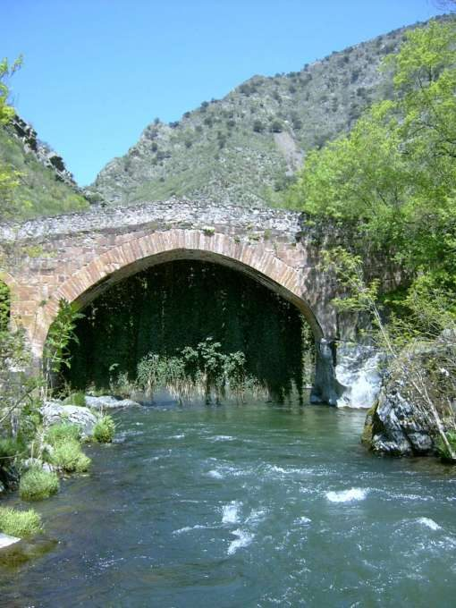
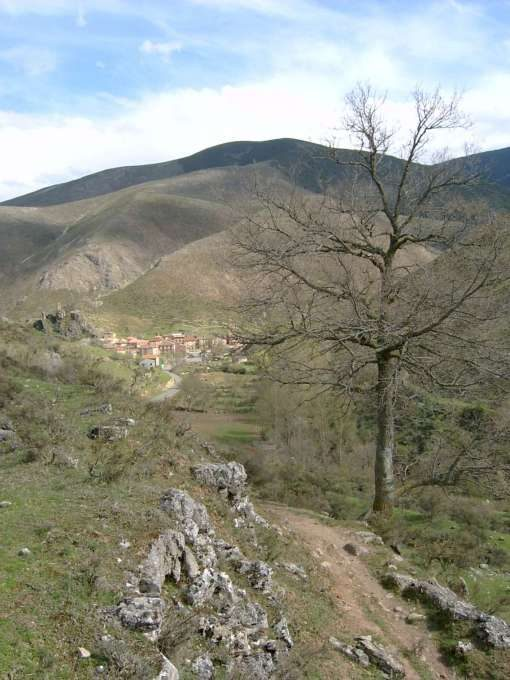

Puente la Hiedra
Anguiano - Viniegra de Abajo · comarca del Najerilla
- Distancia13,9 kmida y vuelta
- Desnivel580 m
- Tiempo orientativo4 h 30 min
- Dificultadmedia-alta
- Época recomendadatodo el año
- Terrenosenda y camino
Un peculiar puente cuyo lado norte está adornado por una espectacular cortina de hiedra; ese es el protagonista de este “Lugar con encanto”. Se encuentra situado a pie de carretera, lo cual en principio no se presta a grandes paseos. Pero si tenemos en cuenta que constituye el punto de partida del antiguo camino por el que se accedía a Ventrosa desde el Valle del Najerilla, mucho, mucho antes de que las carreteras existiesen, pues tenemos un completo menú al que dedicar nuestra jornada. Ventrosa sorprende siempre a sus nuevos visitantes; un pueblo oculto como pocos, pero a la vez coqueto y muy cuidado.
{kind=link}

{kind=link}

Recorrido
El Puente la Hiedra se encuentra situado en la LR-113, sobre el Río Najerilla; a unos 14 kilómetros de Anguiano y unos 3 kilómetros de la conocida como Venta de Goyo. Cruzamos el puente y comenzamos a ascender por un ancho sendero. Enseguida trazamos una cerrada curva hacia la derecha y continuamos ascendiendo a media ladera por el interior del bosque.
Más arriba, un refugio de cazadores hace de transición para abordar un paisaje totalmente despejado con sorprendentes vistas de la zona de las Viniegras. Avanzamos ahora por un camino que nos acercará hasta la Fuente Avellano, momento en el que vemos abajo el pueblo de Ventrosa. A partir de aquí podemos optar por descender hasta nuestro destino utilizando una tranquila y amplia pista o aventurarnos por alguno de los muchos senderos como el de la imagen de arriba.